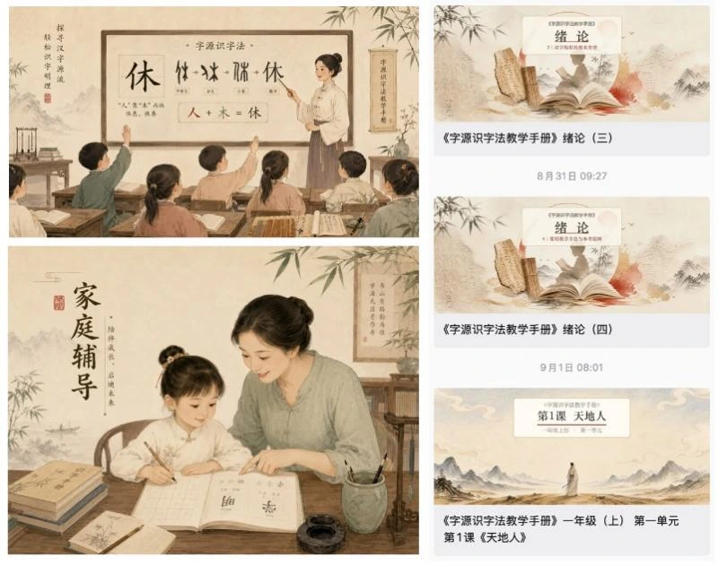
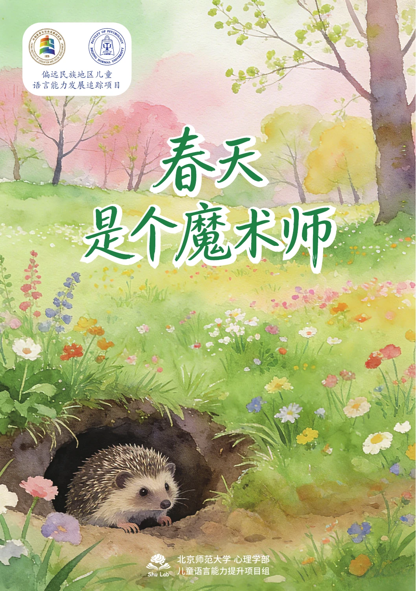
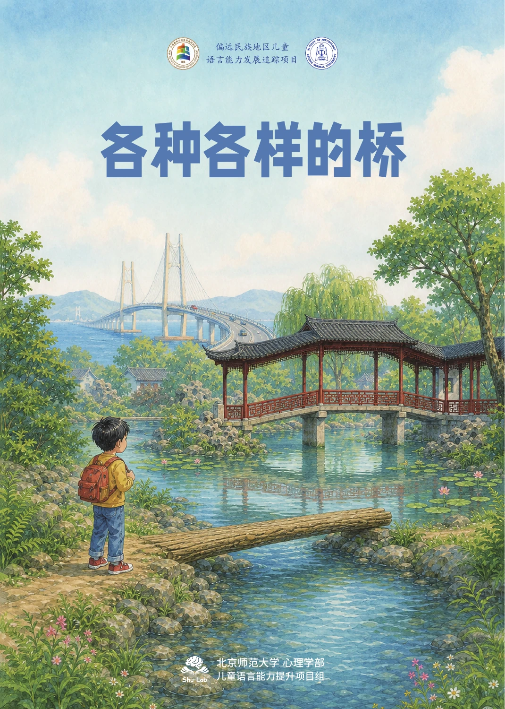

语言是心智启蒙的起点，阅读是人生发展的基石。我们愿用积淀四十年的教育理念与科研成果，打造一套听说读写思的整体解决方案，助力每一个孩子的健康成长与无限未来。
以儿童心理发展规律为基础
遵循汉语语言和阅读发展规律
采用寓教于乐、动手动脑的游戏形式
主题微课以视频课程形式，系统讲解核心知识与关键概念
律动视频以儿歌律动形式，帮助儿童巩固拓展概念、积极表达
敬请期待
依托 AI 智能学伴，实现个性化因材施教
把汉字字理，变成老师能用、孩子能懂的教学方法，举一反三学汉字。

根据孩子的阅读能力匹配难度适宜的分级绘本，提升阅读能力。

